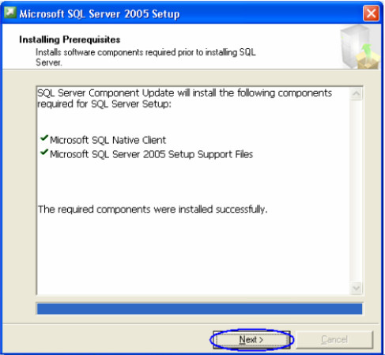
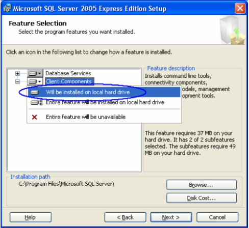
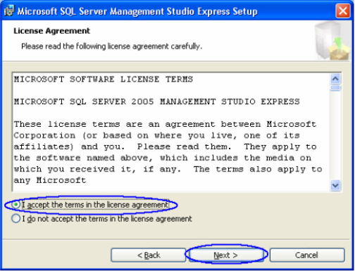

Instalasi Software Pendukung
Windows XP
Install Windows Installer
Pertama, install Windows Installer sebagai berikut:
- Cari file Windows Installer yang sudah Anda download. Jika belum download silahkan download dahulu disini.
- Klik 2x pada file Windows Installer, akan muncul jendela seperti di bawah dan klik Next.
- Keluar jendela seperti di bawah, pilih I Agree, dan kemudian klik Next.
- Proses instalasi sedang berlangsung.
- Instalasi sukses, klik Finish.
Install Microsoft .Net Framework
Kedua, install Microsoft .Net Framework sebagai berikut:
- Cari file Microsoft .Net Framework yang sudah Anda download. Jika belum download silahkan download dahulu disini.
- Klik 2x pada file Microsoft .Net Framework, akan muncul jendela seperti di bawah pilih I have read and ACCEPT the terms of the License Agreement. Kemudian klik Install.

- Instalasi sukses, klik Exit.
Install Microsoft SQL Server Express
Ketiga, install Microsoft SQL Server Express sebagai berikut:
- Cari file Microsoft SQL Server Express yang sudah Anda download. Jika belum download silahkan download dahulu disini.
- Klik 2x pada file Microsoft SQL Server Express, akan muncul jendela seperti di bawah beri centang CheckBox: accept the licensing terms and conditions, dan kemudian klik Next.
- Keluar jendela seperti di bawah klik Install.
- Klik Next.
 - Klik Next.
- Klik Next.
- Klik Next.
- Aktifkan Client Components, dan klik Next.

- Pilih Windows Authentication Mode, dan klik Next.
- Centang CheckBox: Enable User Instances, dan kemudian klik Next.
- Klik Next.
- Klik Install.
- Klik Next.
- Install sukses, klik Finish.
Install Microsoft SQL Server Management Studio Express
Keempat, install Microsoft SQL Server Management Studio Express sebagai berikut:
- Cari file Microsoft SQL Server Management Studio Express yang sudah Anda download. Jika belum download silahkan download dahulu disini.
- Klik 2x pada file Microsoft SQL Server Management Studio Express, akan muncul jendela seperti di bawah klik Next.
- Pilih I accept the terms in the license agreement, dan kemudian klik Next.
 - Klik Next.

- Klik Next.
- Klik Install.
- Install sukses, klik Finish.

Selesai
Selanjutnya install Sotware OtomaX Free Edition. Selengkapnya klik disini.
Catatan: Tata cara di atas berlaku untuk Windows XP 32 bit maupun 64 bit.